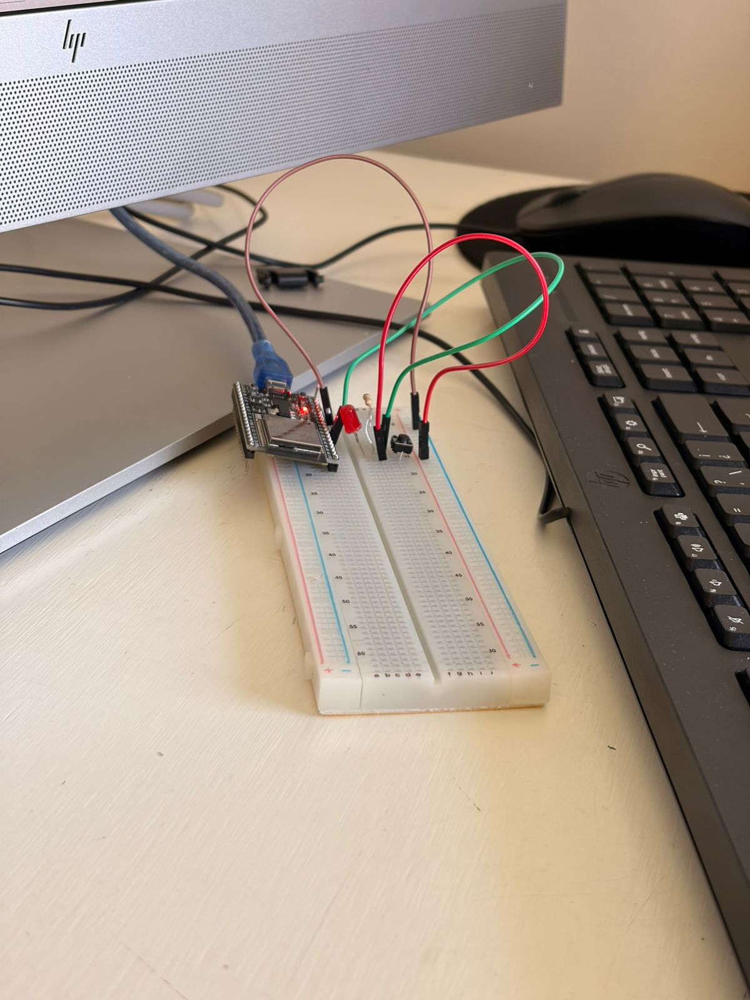
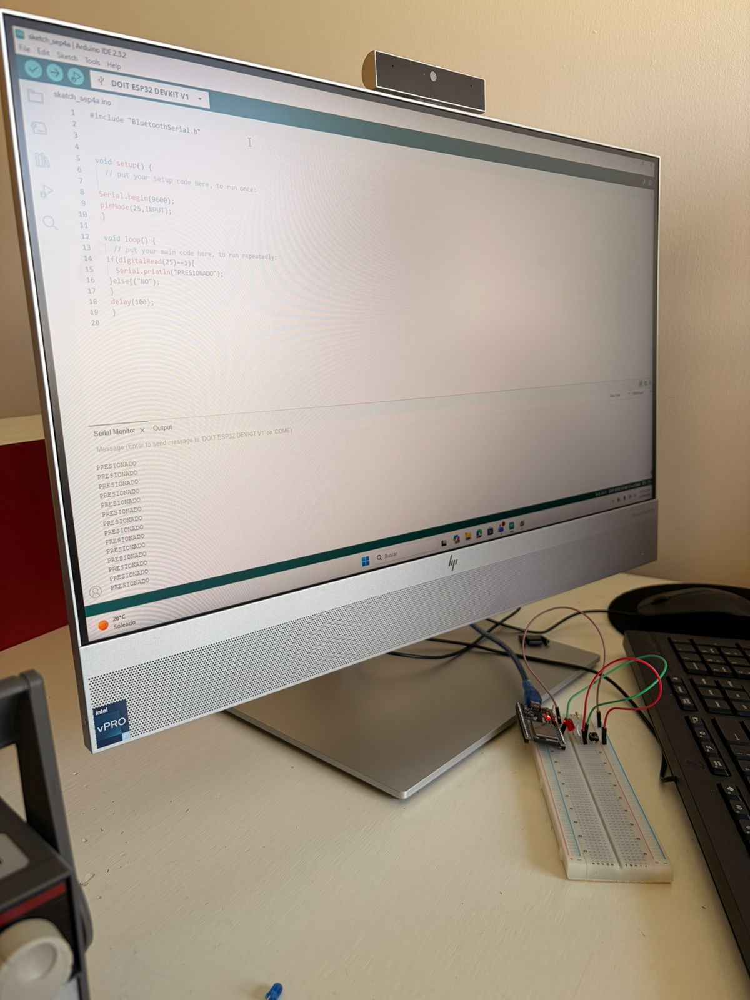
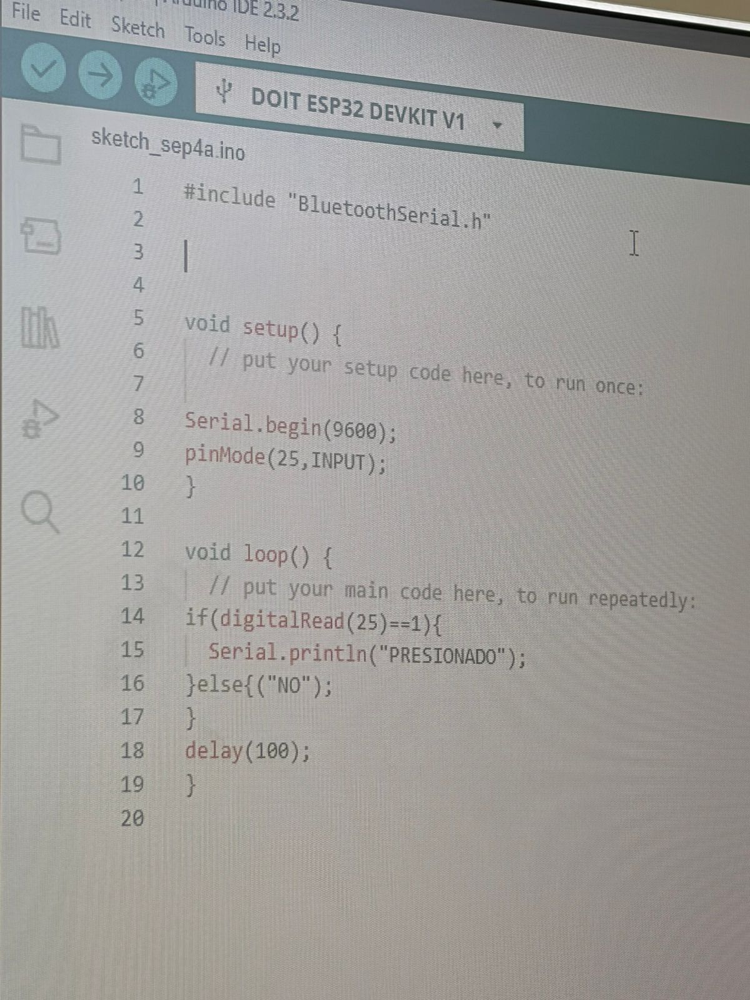
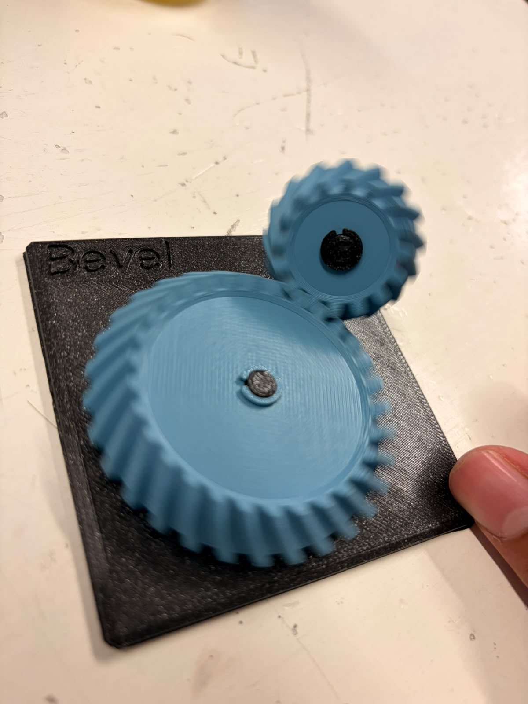
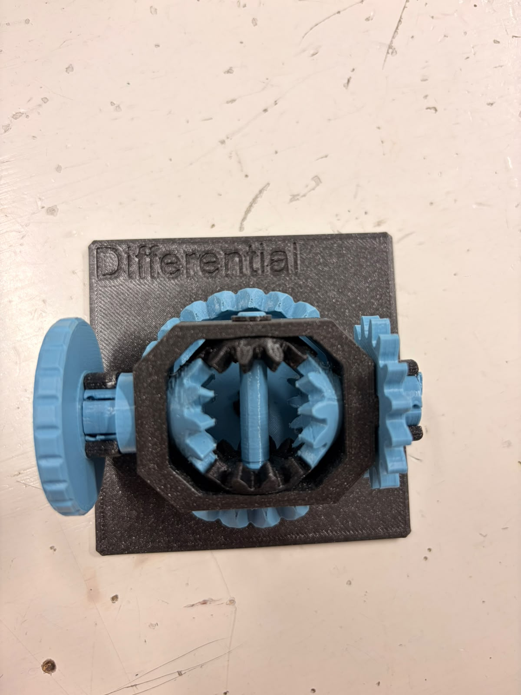
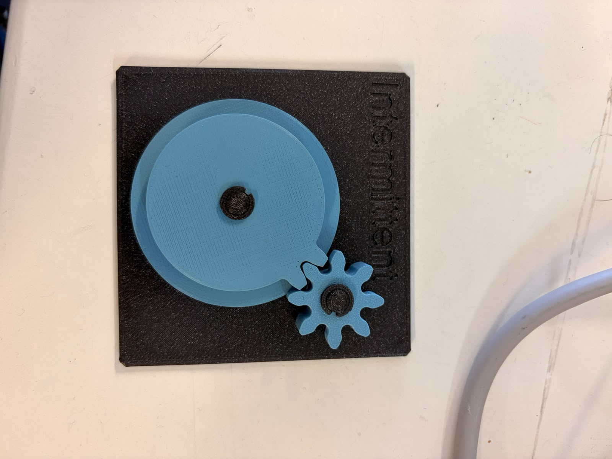
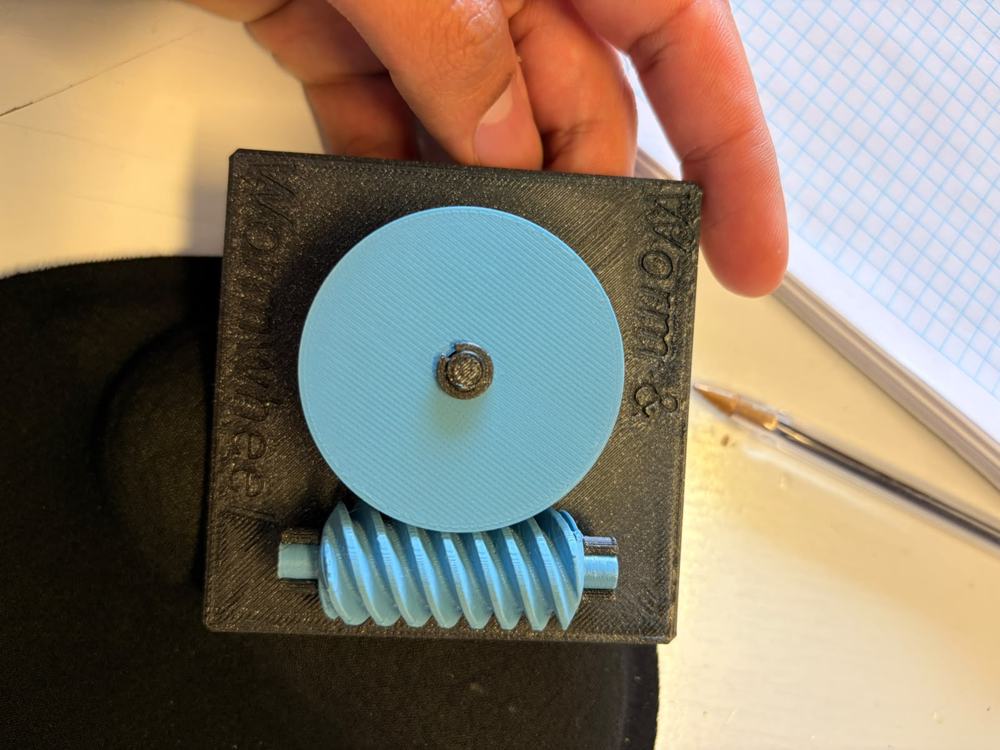
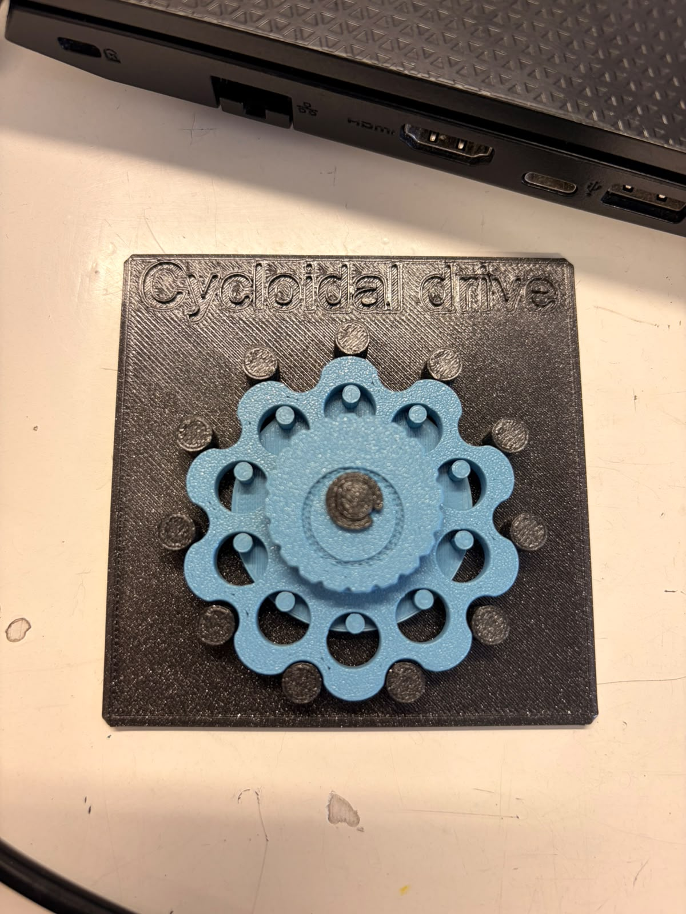
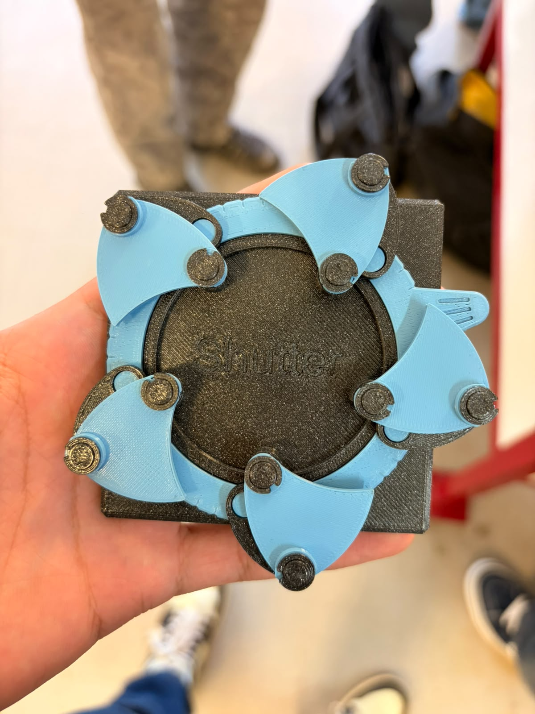
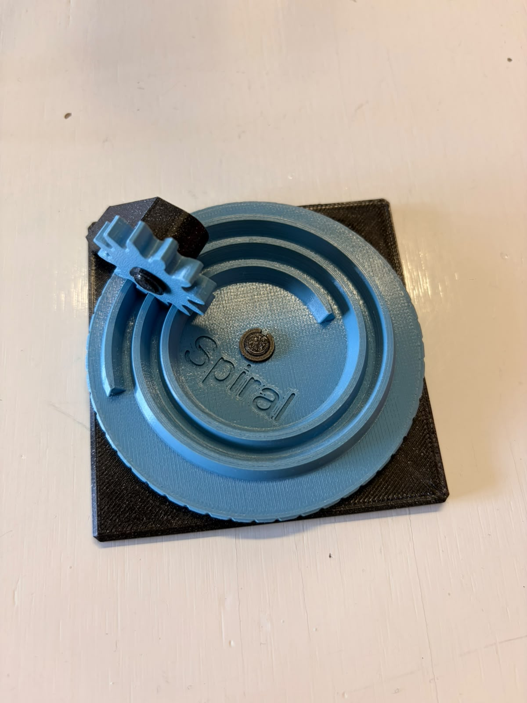

Página de Sergio!!
Bienvenido 👋
Hola, soy Sergio, me gusta la música, resolver problemas, y tocar cualquier instrumento que pueda.
28 de agosto: Creamos nuestro primer circuito con leds y resistencias. Tambien hicimos a un led parpadear y lo conectamos al osciloscopio para ver la electricidad en forma de gráfica.


Usamos 6 volts para el ledsito.

Agregué un led azul extra.

Circuito terminado :)
4 de sept: Conectamos un arduino ESP32 a protoboard, en donde conectamos un LED y programamos un código en Arduino IDE para que parpadera. Conectamos el celular de Oliver al arduino, ya que en nuestros dispositivos no fué exitosa la conexión.



#include "BluetoothSerial.h"
/voidsetup（）｛
/ put your setup code here, to run once:
Serial. begin(9600); pinMode (25, INPUT) ;
void loop() {
// put your main code here, to run repeatedly:
if(digitalRead(25)-==1)(
Serial. printIn ("PRESIONADO");
}else{("NO");
delay(100);
11 sept: Hoy usamos un motor DC y le dimos corriente. Luego en tinkercad conectamos un arduino a dos motores DC a una batería, donde los hicimos girar de un lado a otro, y le conectamos un servomotor para poder vizualizar la dirección y velocidad de los ejes del ambos motores. La prueba fué exitosa.

Este circuito utiliza un Arduino Uno para controlar dos motores DC mediante un integrado puente H L293D, alimentados por una batería de 9V. Además, incluye un servomotor conectado directamente a la tarjeta para funciones de dirección o posicionamiento. Aquí el código:
// C++ code
//
#include <Servo.h>
Servo motor_1;
void adelante(){
digitalWrite(6,HIGH);
digitalWrite(7,LOW);
digitalWrite(3,HIGH);
digitalWrite(4,LOW);
}
void atras(){
digitalWrite(7,HIGH);
digitalWrite(6,LOW);
digitalWrite(4,HIGH);
digitalWrite(3,LOW);
}
void der(){
digitalWrite(6,HIGH);
digitalWrite(7,LOW);
digitalWrite(4,HIGH);
digitalWrite(3,LOW);
}
void izq(){
digitalWrite(7,HIGH);
digitalWrite(6,LOW);
digitalWrite(4,HIGH);
digitalWrite(3,LOW);
}
void setup()
{
//SERVO
motor_1.attach(9);
//MOTOR1
pinMode(6, OUTPUT);//OUT1
pinMode(7, OUTPUT);//OUT2
pinMode(5, OUTPUT);//ENABLE
//MOTOR2
pinMode(4,OUTPUT);//OUT1
pinMode(3,OUTPUT);//OUT2
pinMode(2,OUTPUT);//ENABLE
digitalWrite(5,HIGH);
digitalWrite(2,HIGH);
}
void loop()
{
motor_1.write(0);
adelante();
delay(1000);
atras();
delay(1000);
motor_1.write(90);
der();
delay(1000);
izq();
motor_1.write(180);
delay(1000);
}
18 de sept: 1. Bevel: Cambio de eje (de horizontal a vertical 90°) y velocidad a par.
Uso: Transmitir potencia entre ejes que se cortan.
Relación i estimada: Aprox. 2:1 (piñón pequeño de 12 dientes y rueda grande de 24 dientes).
Reversible o autobloqueante: Reversible.
Vida real: Taladros angulares y diferenciales automotrices.
Proyecto carro: Transmisión de fuerza desde un motor longitudinal hacia los ejes de las ruedas.

- Diferencial: División de velocidad de rotación entre dos salidas a partir de una entrada común.
Uso: Permitir que dos ruedas en un mismo eje giren a distintas velocidades al tomar curvas.
Relación i estimada: 1:1 en línea recta; variable en curvas.
Reversible o autobloqueante: Reversible.
Vida real: Eje de tracción de cualquier automóvil o camión.
Proyecto carro: Eje trasero de un carro RC avanzado para evitar el derrape y el desgaste excesivo de llantas.

- Intermittent (Intermitente): Movimiento rotatorio continuo a movimiento rotatorio intermitente (con pausas).
Uso: Generar avances por pasos o ciclos con tiempos de reposo.
Relación i estimada: Variable por ciclo (gira un sector y luego se bloquea temporalmente).
Reversible o autobloqueante: No es reversible (se bloquea si se fuerza desde la salida).
Vida real: Relojería mecánica (calendarios) y mecanismos de indexación industrial.
Proyecto carro: Sistema dispensador automático de objetos o mecanismo de disparo periódico en un robot de competencia.

- Worm & Wheel (Tornillo sin fin): Alta reducción de velocidad a par (torque) extremo + cambio de eje a 90°.
Uso: Reducir velocidad drásticamente y multiplicar el torque en espacios reducidos.
Relación i estimada: Alta, aprox. 20:1 (el tornillo da 20 vueltas por cada vuelta de la rueda).
Reversible o autobloqueante: Autobloqueante (el tornillo puede mover la rueda, pero la rueda no puede mover al tornillo).
Vida real: Mecanismos de dirección y compuertas automáticas.
Proyecto carro: Sistema de dirección (servo con tornillo sin fin para mantener las ruedas firmes sin gastar energía) o un winche (grúa) de rescate.

- Cycloidal Drive (Reductor Cicloidal): Reducción masiva de velocidad a torque con alta precisión y cero juego.
Uso: Reducción de velocidad compacta con máxima rigidez torsional.
Relación i estimada: Muy alta (usualmente superior a 30:1).
Reversible o autobloqueante: Autobloqueante debido a su alta fricción interna.
Vida real: Juntas de brazos robóticos industriales y actuadores de alta precisión.
Proyecto carro: Articulación de alta fuerza en un brazo robótico móvil o en la tracción de un rover todoterreno.

- Shutter (Obturador / Diafragma): Rotación de un anillo en apertura y cierre radial coordinado.
Uso: Controlar el paso de luz o regular el diámetro de una abertura de forma simétrica.
Relación i estimada: 1:1 respecto al giro del anillo de control.
Reversible o autobloqueante: Reversible.
Vida real: Diafragma de cámaras fotográficas e iris ópticos.
Proyecto carro: Garra robótica o pinza tipo iris capaz de envolver y asegurar objetos redondos.

- Spiral (Espiral): Movimiento rotatorio continuo a desplazamiento radial variable.
Uso: Desplazar un seguidor a distancias variables dependiendo del ángulo de giro.
Relación i estimada: Variable a lo largo del recorrido de la espiral.
Reversible o autobloqueante: No reversible fácilmente (tiende a atascarse por la fricción radial).
Vida real: Antiguos mecanismos de sintonización de radio y levas de posicionamiento.
Proyecto carro: Mecanismo de geometría variable (como abrir paneles o modificar la altura del chasis de forma escalonada).

Empezar rápido (3 pasos)
- Edita el nombre del sitio en
mkdocs.yml: ```yaml site_name: Documentación del Curso theme: yellow name: material